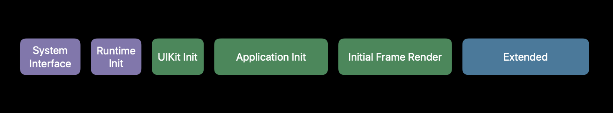
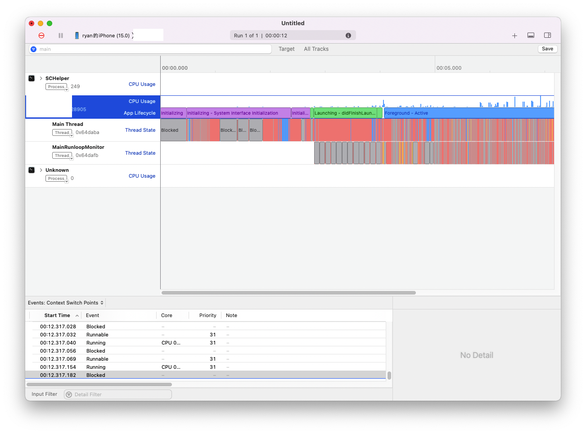
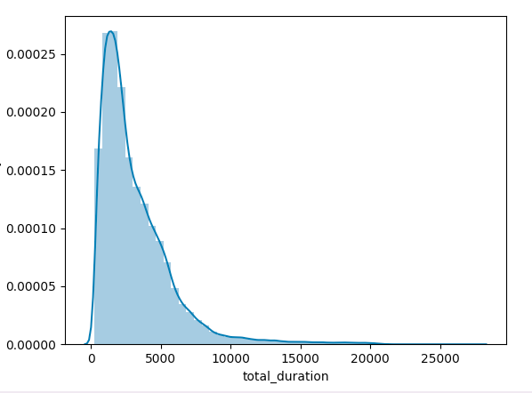
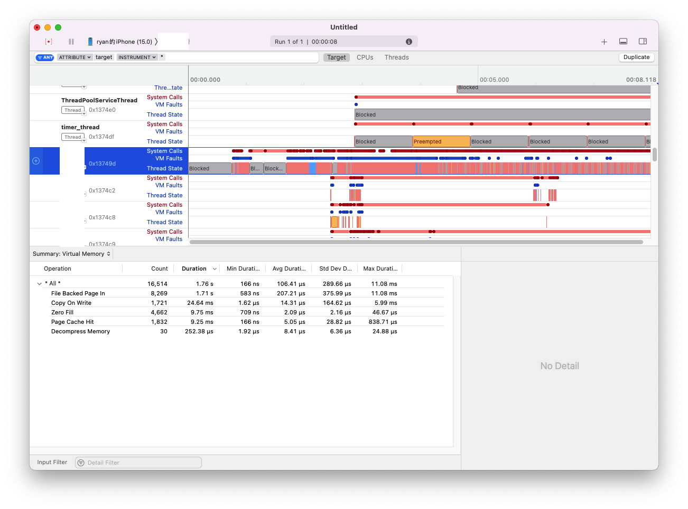
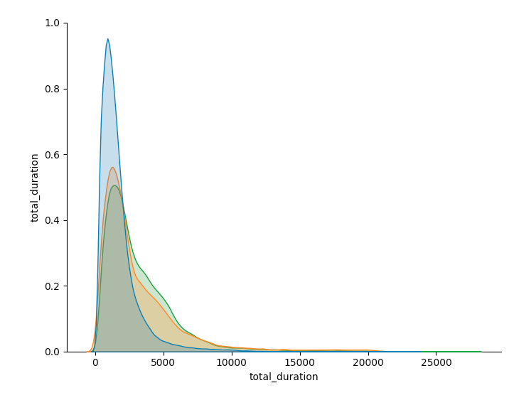

启动耗时是客户端品质的核心指标之一。
一个团队对产品性能的关注，首先体现在App的启动体验上。
本文以近期一次启动优化的案例（P50及平均启动耗时下降45%），来看看那些性能问题可以如何解决，以及对我们日常开发的一些启示。
在本次的优化实践中，我们的目标分为两项：
- App实现启动速度监控
- App启动时间减少30%
其中，目标1旨在实现App启动速度监控上线，将用户端App启动过程分阶段（pre-main/post-main）耗时监控上报，跟踪用户端实际性能数据；目标2旨在通过代码优化等手段，实现App整体启动时间减少30%，提升用户体验。
前置知识
启动的过程，按照WWDC2019上的定义，分为以下几个阶段：

- System Interface：加载可执行文件，依据LoadCommands加载ld，dyld根据动态库依赖关系加载系统动态库、项目动态库，并进行rebase/binding修正符号符号指针；
- Runtime Init：语言runtime的加载、静态初始化方法；
- UIKit Init：程序main入口方法执行，初始化UIApplication，接入系统事件（和Runloop）及UIKit；
- Application Init：调用application:didFinishLaunchingWithOptions，之后调用applicationDidBecomeActive:；
- Initial Frame Render：首帧页面构建，首帧渲染；
- Extended：App进入前台，响应事件。
我们一般使用从进程创建到首帧渲染完成的时间来衡量启动时间（MetricKit也以首帧时间为基准）。以客户端的开发指引来说，基于用户体验考虑，各种启动类型的最大可接受的时间为：
- 冷启动应少于5s
- 热启动应少于1.5s
这是一个宽泛的底线目标。
基本过程
我们的优化工作主要按以下两个基本过程进行：
- 性能检测、监控
- 性能优化
性能检测主要包括Instruments测试以及代码插桩埋点两种方式。我们使用Instruments测试的基准环境是：
- （冷）启动全阶段时间，从icon点击（进程创建）到首帧渲染完成；
- 基准测试设备，选择iPhone 8或目前仍在生产线的iPhone 11（以下Instruments的测试如未说明均指iPhone 11上的测试结果）；
- 已登录状态启动进入首页作为主要测试场景；
对于冷启动的测试，苹果的建议是关闭设备后晾个2-3分钟再重启。
性能优化方面，我们按阶段及重点任务进行：
- 加载阶段优化
- 静态初始化阶段优化
- 启动任务分级优化
- 耗时函数优化
- 主线程阻塞优化
性能检测
一般来说，建立量化指标是进行优化的前置工作。App启动性能的检测我们可以分为两个方面，一是开发阶段的性能测量，二是线上的性能监控。其中开发阶段的性能测量，又以Instruments工具作为主要、常见的手段。再配合代码插桩等手段进行埋点，我们可以得到一个较全面的App启动数据。
Instruments性能检测
Instruments新增的App Launch工具相当于集成了Time Profiler、System Trace等工具的整合。
App Launch的测量主要包括启动过程各阶段的耗时测量、主线程阻塞检测及分析、PageFault页面中断分析等。这些都是常见内容，本文不再细述，我们直接列举一些检测到的结果或问题来实例分析：
- 整体的耗时

时间消耗：
- 初始化（premain）
- 启动初始化 475ms
- 系统接口初始化 1.9s（system interface initialization）
- 静态运行时初始化 350ms（static runtime initialization）
- 启动阶段（main后）
- UIKit初始化 60ms
- didFinishLaunchingWithOptions 1.15s
- 首帧渲染 102ms
优化前Instruments整体达到了3.8-4.0s（iPhone 11/iOS 15.0，设备下同）。
从预埋的数据监控，线上的数据表现有点难看（大概20w的数据）

| 版本 | 均值 | P50 | P90 | P95 | std |
|---|---|---|---|---|---|
| X.0.1 | 3179.2 | 2406.0 | 6165.0 | 7894.0 | 2664.6 |
90分位的数据是6165ms，这说明有10%以上的用户的启动耗时在6s以上，这已经超出我们正常体验的5s的可接受范围了。事实上，后来在排查并发锁问题的时候去检索线上数据，发现有较多低性能设备（375x667/414x736）出现了较多更超预期的启动时间，比如post-main阶段可能超过10s，让我一度怀疑是否埋点数据上报问题。
- Page Fault的影响
二进制重排目前变成了启动优化绕不过去的优化手段之一，我们在优化过程中也特别留意了这方面相关的性能数据。

如上图，整个冷启动阶段测试到的数据是，File Backed Page in: 8269，耗时1.71s。而直接重新Profile热启动后，File Backed Page in的数据是是3908次，468ms。热启动测试不准，一方面也是因为在有缓存情况下，Page Fault有较大影响。
- 综合分析
Instruments的性能检测需要结合Time Profiler、多线程状态、内存、系统日志等手段进行综合分析，尤其对于一些非稳定出现的问题。
有一点需要注意的，iOS 15之后加载器已经更新为dyld4。dyld本来支持DYLD_PRINT_STATISTICS、DYLD_PRINT_STATISTICS_DETAIL等参数来输出日志，但dyld4之后这些日志打印都被取消了（有个别如DYLD_PRINT_APIS还保留）。事实上，dyld4已经删除/屏蔽了原来的api_logs的调用，同时改由进程的安全策略去控制是否Log了，有需要可以了解DYLD_AMFI_FAKE。同时需要注意的是，dyld的日志输出也是很消耗性能的，即使是使用dyld3，我们在分析耗时方法过程中最好关闭这些Log输出能力，减少干扰。
dyld3日志引起的耗时1
2
3
4
5
6
7
8
9
10
1121 1 _dyld_start dyld
20 1 dyldbootstrap::start(dyld3::MachOLoaded const*, int, char const**, dyld3::MachOLoaded const*, unsigned long*) dyld
19 1 dyld::_main(macho_header const*, unsigned long, int, char const**, char const**, char const**, unsigned long*) dyld
18 1 dyld::launchWithClosure(dyld3::closure::LaunchClosure const*, DyldSharedCache const*, dyld3::MachOLoaded const*, unsigned long, int, char const**, char const**, char const**, Diagnostics&, unsigned long*, unsigned long*, bool*, bool*) dyld
//...
5 1 dyld3::_dyld_get_objc_selector(char const*) libdyld.dylib
4 1 0x18524d840 libdyld.dylib
3 1 dyld::vlog(char const*, char*) dyld
2 1 _simple_vdprintf dyld
1 1 _flush dyld
0 1 write dyld
另外实践中，在Instruments的线程堆栈采样中，dyld4的一些方法也无法完整符号化。比如
1 | 0 mach_msg_overwrite_trap dyld |
我们仅仅是知道此处触发了动态库的载入，但具体什么库怎么触发的毫无线索。
但在dyld3下我们可以看到较完整的堆栈信息，如下所示可看到是触发了Accessibility的动态库载入：1
2
3
4
5
6
7
8
9
10
11
12
13
14
15
16
17
1817 2 _dispatch_main_queue_callback_4CF$VARIANT$armv81 libdispatch.dylib
16 2 0x18521c298 libdispatch.dylib
15 2 _dispatch_call_block_and_release libdispatch.dylib
14 2 -[AccessibilitySettingsLoader _initializeDelayedAccessibilitySettings] AccessibilitySettingsLoader
13 2 soft_AXProcessIsSystemApplication AccessibilitySettingsLoader
12 2 0x1cdc18254 AccessibilitySettingsLoader
11 2 0x1c5c93f30 SoftLinking
10 2 dlopen_internal(char const*, int, void*) libdyld.dylib
9 2 dyld3::dlopen_internal(char const*, int, void*) libdyld.dylib
8 2 dyld3::AllImages::dlopen(Diagnostics&, char const*, bool, bool, bool, bool, bool, void const*, bool) libdyld.dylib
7 2 dyld3::AllImages::loadImage(Diagnostics&, char const*, unsigned int, dyld3::closure::DlopenClosure const*, bool, bool, bool, bool, void const*) libdyld.dylib
6 2 dyld3::AllImages::runImageCallbacks(dyld3::Array<dyld3::LoadedImage> const&) libdyld.dylib
5 2 dyld3::AllImages::notifyMonitorLoads(dyld3::Array<dyld3::LoadedImage> const&) libdyld.dylib
4 2 dyld::notifyMonitoringDyld(bool, unsigned int, mach_header const**, char const**) dyld
3 2 dyld::notifyMonitoringDyld(dyld::RemoteNotificationResponder&, bool, unsigned int, mach_header const**, char const**) dyld
2 2 dyld::RemoteNotificationResponder::sendMessage(int, unsigned int, mach_msg_header_t*) dyld
1 2 mach_msg_overwrite dyld
0 2 mach_msg_overwrite_trap dyld
对照工程源码，发现原来有些业务进行了accessibilityLabel的配置。
还有需要提一点的是，目前Xcode已经支持 os_signpost 进行日志打点，对于我们组件化的一些耗时统计也可以在Instruments上直观地看到。这在一些特殊需要的场景下我们可以更方便地结合Time Profiler等其他工具进行分析，找出性能瓶颈。
源码层面性能监测
源码层面的性能测试，主要包括启动阶段耗时的监测、耗时方法的分析等。
- 启动阶段耗时
在这次案例中，我们主要获取进程创建时间、main开始执行时间、didFinishLaunching时间及首帧渲染完成时间。
进程创建时间，我摘录了段代码如下，都是业内公开的代码了：
1 | + (NSTimeInterval)processStartTime |
但根据实测以及线上上报的数据来看，查询到的进程创建时间的数据可能会出现一些明显非法数据，比如大于10,000ms的数据。另外一个可复现的场景，即设备重启后，查询到的进程创建数据，要比点击icon的时间要早数秒。目前对这种情况尚无法定位问题，主要是设定规则过滤了非法数据，如果有同学有这方面处理经验可以分享下。
首帧渲染时间，主要根据iOS上CoreAnimation的工作原理，相当于hook了CATransaction提交后的时机（其他hook方法同理）
1 | //注册block 13- |
源码层面的埋点统计要比Instruments的数据要小，一方面调试进程attach到app进程有时间损耗，另一方面Release版源码一般有屏蔽逻辑及更多的编译优化。但不影响我们分别进行性能检测。在本次案例中也是每个优化步骤都控制变量，可以通过测试数据的比对明确优化内容的效果。
- 耗时方法分析
通过hook底层方法（objc_msgSend）可以插桩记录方法的耗时。其中以Facebook的基于fishhook的方式为常见。
在 Mach-O 中，有 Bind 和 Lazy Bind 的两种符号绑定的表，基于 fishhook 的 Hook，是通过修改__la_symbol 和 __nl_symbol 两个符号表中被hook的符号的指针，后续便可以直接通过 __la_symbol_ptr 找到函数地址直接调用，在替换的方法中进行插桩。
通过耗时方法分析，我们可以dump出启动过程中长耗时的方法列表，分析确认需要优化的代码。也可以按需定制策略对线上运行情况进行采样采集。
以下是排查到的耗时的一个示例。
1 | // 栈深度 | 耗时 | 方法 |
实测我们看到的大部分情况排查到的耗时方法，是可以跟Time Profile采样到的线程堆栈对应的。
一些低性能问题
- XPC性能问题
XPC的调用，是引起性能问题的一个重要场景，比如下述的堆栈显示的是我们cacheHeader方法引起的XPC调用。比照代码可以发现实际是一个设备UUID的接口对Keychain的访问引发的。
1 | 0 mach_msg_trap libsystem_kernel.dylib |
除了Keychain的读写访问，还有比如通知中心、UserDefaults、PasteBoard等接口访问都可能触发XPC的调用1
2
3
4
5
6
7
8
9
10
11
12
13
14
150 mach_msg_trap libsystem_kernel.dylib
1 _dispatch_mach_send_and_wait_for_reply libdispatch.dylib
2 dispatch_mach_send_with_result_and_wait_for_reply$VARIANT$armv81 libdispatch.dylib
3 xpc_connection_send_message_with_reply_sync libxpc.dylib
4 __NSXPCCONNECTION_IS_WAITING_FOR_A_SYNCHRONOUS_REPLY__ Foundation
5 -[NSXPCConnection _sendInvocation:orArguments:count:methodSignature:selector:withProxy:] Foundation
6 -[NSXPCConnection _sendSelector:withProxy:arg1:arg2:] Foundation
7 _NSXPCDistantObjectSimpleMessageSend2 Foundation
8 0x1940a4be0 UserNotifications
9 0x18521c298 libdispatch.dylib
10 _dispatch_lane_barrier_sync_invoke_and_complete libdispatch.dylib
11 -[UNUserNotificationServiceConnection notificationSettingsForBundleIdentifier:] UserNotifications
12 -[UNUserNotificationCenter notificationSettings] UserNotifications
13 -[UIApplication currentUserNotificationSettings] UIKitCore
14 static XXXNotifyPermissionManager.check() XXX
1 | 0 mach_msg_trap libsystem_kernel.dylib |
- Webview
很多应用喜欢在应用启动时初始化一个WKWebview（或已废弃的UIWebview），可能是用来同步UA信息。WKWebview的初始化及JS脚本执行是很耗时的操作。
- 并发锁等待
对于有多线程读写需求的数据，为了数据的一致性，我们一般会对临界代码的访问进行加锁处理。这体现在很多场景，比如观察者模式Observer的读写一般需要加锁；比如共享资源的读写需要加锁，很常见的就是SQLite数据库的读写就有文件锁；比如很多日志库的实现也会加锁。
并发处理需求的处理，在目前都是有加锁需要的。但排查甄别这类问题却是相对麻烦的事情，一是因为并发场景不一定好复现，二是锁等待时间比较随机。
在本次的案例中，我们发现有几个场景导致锁等待的。
- 凌乱的递归锁
这个项目的历史遗留原因，在一个Service中介者的实现上，有比较多问题。列一下伪代码：
1 | @interface ServiceCenter |
因为要支持多线程访问，读写serviceMap需要加锁。而在Service的初始化过程中，会向ServiceCenter注册遵循不同proto的Client，而ServiceCenter对clientMap的读写也是需要加锁的。
所以ServiceCenter是需要递归锁的，项目里面使用的是@synchronized。暂且不论锁的性能问题，并发情况下这段逻辑上是可能会引起锁等待的。
- Mars日志库异步写入
Mars是一个基于mmap方案的日志库。Mars的总体的流程分为3个步骤：
a. 日志格式化
b. 写入缓存
c. 达到阈值后通知后台线程写入文件
XloggerAppender::Write方法在异步写入的情况下是如下代码：1
2
3
4
5
6
7
8
9
10
11
12
13
14
15
16
17
18
19void XloggerAppender::__WriteAsync(const XLoggerInfo* _info, const char* _log) {
char temp[16*1024] = {0}; //tell perry,ray if you want modify size.
PtrBuffer log_buff(temp, 0, sizeof(temp));
log_formater(_info, _log, log_buff);
ScopedLock lock(mutex_buffer_async_);
if (nullptr == log_buff_) return;
if (log_buff_->GetData().Length() >= kBufferBlockLength*4/5) {
int ret = snprintf(temp, sizeof(temp), "[F][ sg_buffer_async.Length() >= BUFFER_BLOCK_LENTH*4/5, len: %d\n", (int)log_buff_->GetData().Length());
log_buff.Length(ret, ret);
}
if (!log_buff_->Write(log_buff.Ptr(), (unsigned int)log_buff.Length())) return;
if (log_buff_->GetData().Length() >= kBufferBlockLength*1/3 || (nullptr!=_info && kLevelFatal == _info->level)) {
cond_buffer_async_.notifyAll();
}
}
可以看到也加了互斥锁，并且是在发起线程上进行压缩、加密后写入缓存的，算是一个耗时操作。日志的多线程使用也是避免不了，项目中可能在网络回调、数据库读写回调、各种业务代码中都可能有，有一定的几率引发锁等待。
- 主线程大量I/O
列举一些：
a. 图片资源读取
b. 配置读取
c. KV存储同步读写
这些场景都非常常见，很可能也是你们项目中的性能杀手。
优化
根据行业过往的经验及苹果的建议，我们有一些常见的优化方法和策略。
- 加载阶段优化
苹果给出的建议是，减少对外部框架和动态库的依赖。
我们可以实际操作的一些优化：
- 减少不必要的系统库依赖；
- 集成二、三方库时尽量使用静态库进行集成；
- 删除冗余代码；
系统框架在不同App间大部分是共享的，对于__TEXT段等都不需要从文件重新加载，因此系统库的加载的开销是比较少的。我们从示例中Networking的加载可以了解。1
2
3
4
5
6dyld[22103]: Mapping /Users/jason/Library/Developer/CoreSimulator/Devices/CBF3EE82-71E5-4E03-9224-ED58E7439141/data/Containers/Bundle/Application/27EF4D4C-1E45-460A-8E01-3B43BA4DD038/Merge.app/Frameworks/Networking.framework/Networking
dyld[22103]: __TEXT (r.x) 0x0001034F4000->0x000103594000
dyld[22103]: __DATA_CONST (rw.) 0x000103594000->0x00010359C000
dyld[22103]: __DATA (rw.) 0x00010359C000->0x0001035B8000
dyld[22103]: __LINKEDIT (r..) 0x0001035B8000->0x000103668000
dyld[22103]: <6A29357D-1979-37A4-A46C-6AC0FB1141C5> /Users/jason/Library/Developer/CoreSimulator/Devices/CBF3EE82-71E5-4E03-9224-ED58E7439141/data/Containers/Bundle/Application/27EF4D4C-1E45-460A-8E01-3B43BA4DD038/Merge.app/Frameworks/Networking.framework/Networking
第二点借助CocoaPods很容易实现，可以组件静态库化，也可以指定:linkage为static。对于极致的优化，可以对一些只能动态库集成、但非启动过程中必需的三方库，可以进行包装进行动态载入。
第三点删除冗余代码，一些比较简便的方式就是通过比对Mach-O文件中clslist与classref的差集来分析。
因为iOS13之后dyld3的启动闭包优化，以及设备性能提升，存在较大比例的热启动的情况。从我们后来的检测数据来看，加载阶段的优化在线上平均表现是比较一般的。
- 静态初始化阶段优化
静态初始化部分的耗时，通常来源于三部分：
- C++静态构造函数
- Objective-C +load 方法
- 标记为clang属性_attribute((constructor))函数
对于一般的项目我们着手处理的更多的是+load方法的优化。因为+load方法的执行时机比main函数更早，实际上是可以用来做一些预处理工作的。但因为iOS开发的早期一些错误的范例，以及开发的一些惰性，导致了+load方法的滥用甚至是错误使用。
一些错误的使用范例：1
2
3
4
5
6@implementation XXXConfessionView
+ (void)load {
[UIUtil registErrorHandle:(id<UIUtilErrorHandle>)self withCode:ERR_CODE_AAA];
[UIUtil registErrorHandle:(id<UIUtilErrorHandle>)self withCode:ERR_CODE_BBB];
[UIUtil registErrorHandle:(id<UIUtilErrorHandle>)self withCode:ERR_CODE_CCC];
}
+load方法内部实际调用了UIKit相关的接口，又触发了UIKit的一些加载及初始化方法。
通常来说，在没有其他优化手段时，我们可以考虑将部分+load方法中逻辑迁移到+initialized中，附一下两个方法的接口说明：+load1
2
3
4
5
6
7
8
9
10
11
12
13
14
15load()
Invoked whenever a class or category is added to the Objective-C runtime; implement this method to perform class-specific behavior upon loading.
The load() message is sent to classes and categories that are both dynamically loaded and statically linked, but only if the newly loaded class or category implements a method that can respond.
The order of initialization is as follows:
All initializers in any framework you link to.
All +load methods in your image.
All C++ static initializers and C/C++ __attribute__(constructor) functions in your image.
All initializers in frameworks that link to you.
In addition:
A class’s +load method is called after all of its superclasses’ +load methods.
A category +load method is called after the class’s own +load method.
In a custom implementation of load() you can therefore safely message other unrelated classes from the same image, but any load() methods implemented by those classes may not have run yet.
Important
Custom implementations of the load method for Swift classes bridged to Objective-C are not called automatically.
+initialized1
2
3
4
5
6
7
8
9The runtime sends initialize to each class in a program just before the class, or any class that inherits from it, is sent its first message from within the program. Superclasses receive this message before their subclasses.
The runtime sends the initialize message to classes in a thread-safe manner. That is, initialize is run by the first thread to send a message to a class, and any other thread that tries to send a message to that class will block until initialize completes.
The superclass implementation may be called multiple times if subclasses do not implement initialize—the runtime will call the inherited implementation—or if subclasses explicitly call [super initialize]. If you want to protect yourself from being run multiple times, you can structure your implementation along these lines:
+ (void)initialize {
if (self == [ClassName self]) {
// ... do the initialization ...
}
}
Because initialize is called in a blocking manner, it’s important to limit method implementations to the minimum amount of work necessary possible. Specifically, any code that takes locks that might be required by other classes in their initialize methods is liable to lead to deadlocks. Therefore, you should not rely on initialize for complex initialization, and should instead limit it to straightforward, class local initialization.
实际上很多这些预处理的任务，比如组件化后的一些服务或业务模块的加载、初始化工作，可以调整到首帧甚至更晚的实际进行。对于这些LaunchTask任务我们可以管理起来，既避免在静态初始化阶段通过+load方法这些方式引入耗时，又能指定优先级及依赖关系，让启动过程或者说App的模块/服务化都更加清晰。实践上，我们会将模块/服务任务的注册/映射信息，写入到Mach-O的自定义Section中，具体会在后面文章进行介绍。
- 启动任务分级优化
启动过程，我们可以划分为didFinishLaunch、afterFirstFrame等几个阶段。在UIApplicationDelegate回调时，我们可以建立应用任务时序、优先级的管理，同上面提到的LaunchTask，不赘述。
- 耗时函数优化
在分析到项目的耗时方法后，我们需要具体的进行优化，比如缓存是一种常见的优化策略，又比如减少内存操作等。可以举一些案例。
比如前面提到的通过WKWebView查询UA的功能，考虑到UA生成逻辑的变更频率，完全可以增加多级缓存，可以大幅减少这个方法的耗时。
又比如项目中有个ListViewModel的类有这么一个属性：
1 | private(set) var blueRoomList:[BlueRoomListModel] { |
这个blueRoomList在tableView的回调被频繁调用，用来查询count或某个element。针对这个情况，我们的优化可以对ListViewModel增加提供外部接口，避免这个copy操作。
- 主线程阻塞优化
主线程阻塞一般是锁、I/O或XPC引起的。
对于锁的问题，一方面如果是高频的并发情况，可以选择锁的替换方案，比如使用读写锁、使用dispatch队列等。对于递归锁，根据benchmark，NSRecursiveLock性能是比较低的，一个可选的方案是支持递归的pthread_mutext_t。另一方面，则需要避免死锁的逻辑，我们最好是限制临界区代码的范围，比如上述提到的ServiceCenter的案例中，如果我们只对serviceMap读写部分加锁，将Service的初始化过程中的无关逻辑移出加锁范围，可以大幅减少我们死锁的问题。
I/O的优化，对于启动过程必须的图片资源，我们可以进行预加载。UIImage的加载是支持并发的。还有启动图缓存的使用，既避免资源加载的阻塞，又在视觉效果上可以较好地过渡，在异步加载资源方面是可以有效改善用户体验的。
主线程阻塞的问题一般隐藏性比较深，尤其是不稳定重现的问题，需要我们根据实际情况处理，这里不再赘述。
- 首帧渲染优化
用苹果的建议，一句话是“降低初始视图的复杂性”。总的来说，首帧渲染涉及到我们对应用页面栈的管理、服务的加载逻辑、业务架构、UI渲染优化等，总体上是涉及到项目架构的。这些都需要专题解决，所以这里也只能一笔带过。
在不大改动架构的前提下，我们也可以注意一些小技巧，比如，I/O的管理及缓存的使用。图片作为我们很常见的视觉元素，图片加载和图片缓存有合理的管理策略，是能有效改善应用性能的。
- 二进制重排
二进制重排主要是考虑程序运行过程中对指令读取过程中Page Fault引起的性能问题。主要的方法是通过clang插桩记录启动过程中的访问的符号信息，生成一个orderfile，以便编译器在链接时调整顺序。Page Fault之前已有博客讨论了，orderfile的生成目前也是成熟方法了（可以直接使用YCSymbolTracker），只是需要注意+load方法以及效率问题。我对YCSymbolTracker有个小小的patch，后续会提pr过去。此处不再赘述。
优化结果
这一次的优化，我们分了两期上线，x.0.1是优化前版本，x.0.2主要上线除启动任务分级、主线程卡顿之外的其他优化处理，x.0.3补充提交了这两个优化。
最终的效果如下：
| 版本 | 均值 | P50 | P90 | P95 | std |
| X.0.1 | 3179.2 | 2406.0 | 6165.0 | 7894.0 | 2664.6 |
| x.0.2 | 3130.0（0.98） | 2096.0（0.87） | 6470.0 | 8850.0 | 3126.3 |
| X.0.3 | 1737.9（0.55） | 1306.0（0.54） | 3301.0 | 4539.0 | 1665.7 |

（蓝色是优化前版本x.0.1，橙色是x.0.2，红色是x.0.3）
可以看到，x.0.3版本优化后，启动的的中位时间从2.41s下降为1.31s，平均时间从3.18s下降为1.74s，P90下降为3.30s。这说明就该项目而言，主线程阻塞问题对某些设备有很大影响。但如上文提到的，二进制重排，出乎意料的是，在平均效果表现上一般。可能是启动闭包以及的优化。
1.31s的效果也不算理想，对于尚包含大量不规范的数据库操作、KV存储等逻辑的项目，这已经在预期中了。而更深度的优化，只能在应用页面栈管理、服务加载逻辑、业务架构、UI渲染优化等方面继续深耕。
总结
任何时候，问题比答案更重要，提出问题需要勇气，找到问题需要努力。对技术路上开放、分享、开源、营造社区氛围的技术er们，Respect。
Comments